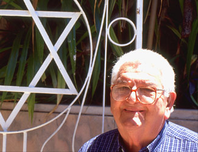

Link
to JTA article about Dr. Jose Miller
AROUND THE
JEWISH WORLD
Cuban Jewish leader’s close ties to Catholic Church,
Castro remembered
By Larry Luxner
March 20, 2006
MIAMI,
March 20 (JTA)- It was December 1999, barely two years after Pope
John Paul II's visit to officially atheist Cuba, and Fidel Castro
was meeting with 70 religious leaders on the touchy subject of declaring
Dec. 25 a national holiday.
Castro turned to Dr. Jose Miller, president of Cuba's tiny Jewish
community, and asked for his opinion of Christmas, given that no Jewish
holidays were being given equal consideration.
Miller stood up and declared that "as a Jew, I would feel very
happy with the designation of Dec. 25 as a national holiday, because
after all, what is Christmas if not the celebration of one of the
greatest Jews in history, Jesus of Nazareth?'
That story is told by Rev. Jose Lopez, secretary of the Cuban Council
of Churches. Lopez considered himself a close friend of Miller, who
died Feb. 27 at age 80.
"We will never forget his words on many occasions that showed
his love for Cuba, his Jewish principles and affection for his Christian
brethren,"' Lopez said.
"He was the person who, for many years, insisted that the Jewish
community belong to the Cuban Council of Churches. He always got the
same answer, that we were an organization of churches, of believers
in Christ,' he said, adding that finally, after careful consideration,
Miller was welcomed as a "fraternal associate" and thereafter
invited to all official functions.
Eddie Levy, chairman of the South Florida organization Jewish Solidarity,
told the Miami Herald, "If there is a Jewish community in Cuba,
it's because of his leadership. It was his job, his work, his life."
Miller was born in Sancti Spiritus province in 1925; his parents had
moved to Cuba from Lithuania in the early 1900s. He studied dentistry
at the University of Havana and was considered one of the island's
best specialists in facial reconstruction surgery.
Since 1981, Miller also had been the president of the Patronato, a
large synagogue in Havana's once-fashionable Vedado district. After
a heart attack forced him to retire in 1994, Miller dedicated himself
to saving Cuba's dwindling Jewish community from extinction.
To that end, he managed to revive smaller synagogues in Camaguey and
Santiago de Cuba. But he was criticized by Cuban exiles in Miami as
a tool of the Castro regime for refusing to support the dissident
movement or speak out against repression in Cuba.
"The government does not manipulate me," Miller insisted
in a 2003 interview with JTA. "What interests me is how Castro
acts toward the Jewish community. I don't ask anyone in the Jewish
community what he thinks about politics. We're not pro-Castro or anti-Castro
here. If someone wants to be a dissident, let him be one - but not
inside the Patronato."
Avner Tavori, a spokesman for the World Jewish Congress, called Miller
"a veteran friend and leader of the Jewish community in Cuba,
where he maintained authentic Judaism in the most creative way."
Praise also came from Stanley Cohen, international chairman of the
B'nai B'rith Cuban Jewish Relief Project.
"Dr. Miller was a true humanitarian and leader, and without his
guidance over these many years, I do not believe that the community
could be as vibrant as it is today," said Cohen, who knew Miller
for more than 10 years. "He was not only a good friend, but a
brother in our work to make the Jewish community of Cuba strong. At
this point, I have no idea who will take his place."